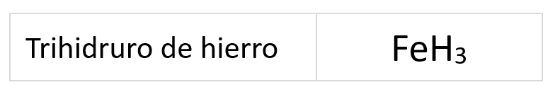
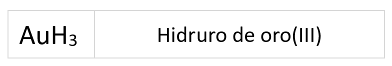
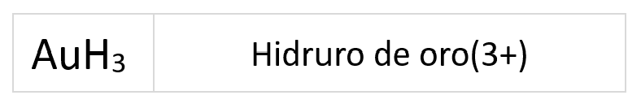
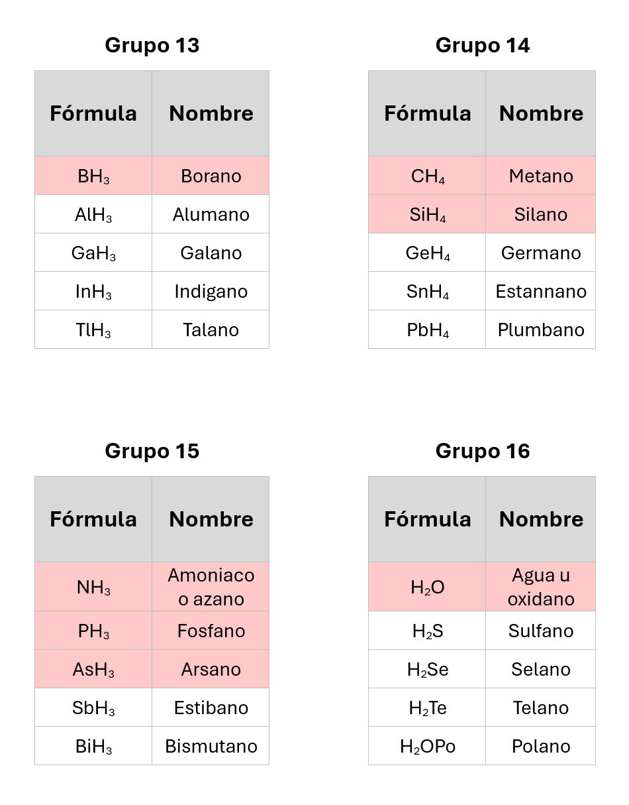
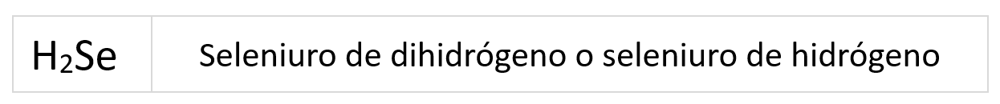
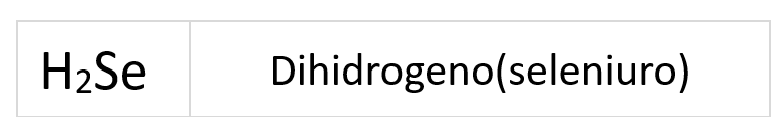
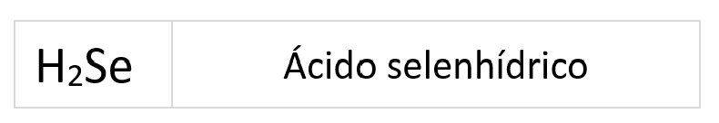

Estos compuestos se forman con la unión del hidrógeno con el resto de elementos de la tabla periódica y según con quién se combine el hidrógeno, su estado de oxidación puede ser +1 o -1.
- Si se combina con elementos que en la secuencia de elementos se sitúan más a la izquierda que él, como son los metales, el estado de oxidación del hidrógeno es -1.
- Si se combina con elementos que en la secuencia de elementos se sitúan más a la derecha que él, el estado de oxidación del hidrógeno es +1.
- La suma de todos los estados de oxidación ha de ser cero, ya que los compuestos son neutros,
- Un mismo elemento puede tener un estado de oxidación en un compuesto y otro distinto en otro compuesto.
{kind=link}
{kind=link}
Existen diferentes tipos de combinaciones del hidrógeno:
- Hidruros metálicos: combinaciones del hidrógeno con los metales,
- Hidruros progenitores: combinaciones del hidrógeno con los elementos del grupo 13 al 17
- Haluros y anfigenuros del hidrógeno: combinaciones del hidrógenos con los elementos del grupo 16 y 17.
Veámos como se nombran y formulan cada uno de ellos
Hidruros metálicos
Son combinaciones del hidrógeno con los metales, donde le número de oxidación del hidrógeno es -1 y el del metal es positivo.
Para formular:
- Se coloca el elemento metlaico a la izquierda y después el hidrógeno a la derecha.
- Se intercambian los números de oxidación como subíndices, prescindiendo del signo.
- Se prescinde de escribir el número 1 como subíndice.
Para nombrar:
Dentro de la nomenclatura de composición podemos nombrar de tres formas posibles:
- Prefijos multiplicadores
-
En esta nomenclatura se utilizan los prefijos multiplicadores para indicar el número de hidrógenos en la molécula.
Se nombran según el siguiente esquema:
El prefijo mono- solo se utiliza en caso de duda.
Ejemplo:

- Número de oxidación
-
En esta nomenclatura el número de oxidación del elemento se indica con números romanos entre paréntesis.
Se nombran siguiendo este esquema:
• No se deja espacio entre el nombre del elemento y el paréntesis.
• Si el estado de oxidación del metal se sobreentiende no es necesario especificarlo (ocurre cuando el elemento solo tiene un estado de oxidación)
Ejemplo:

- Valor de la carga (no lo veremos en este curso)
-
En esta nomenclatura el número de oxidación se indica con el valor de la carga entre paréntesis.
Se nombran según el siguiente esquema:

• No se deja espacio entre el nombre del elemento y el paréntesis.
•Si el estado de oxidación del metal se sobreentiende no es necesario especificarlo.
Ejemplo:

Hidruros progenitores
Combinaciones del hidrógeno con los elementos de los grupos 13, 14, 15, 16 y 17, aunque en este curso solo veremos los de los grupos 13, 14 y 15.
Nos encontramos con dos formas de formular: como si fueran hidruros metálicos usando la nomenclatura de composición con los prefijos multiplicadores o mejor usar la de "memoria" que podemos encontrar señalados en rosa en las siguientes tablas.
Para formular:
- En los compuesto con los elementos del grupo 13 ,14 y 15 el hidrógeno se escribe a la derecha y el otro elemento a la izquierda.
- Los subíndices +1 y -1 no se escriben.
- En los compuestos con los grupos 16 y 17 el hidrógeno actúa con número de oxidación +1 y se coloca a la izquierda en la fórmula.
- Los elementos del grupo 16 actúan con el número de oxidación -2 y se coloca a la derecha en la fórmula.
- Los elementos del grupo 17 actúan con número de oxidación -1 y se coloca a la derecha en la fórmula.
- Los subíndices +1 y -1 no se escriben.
Para nombrar:
Además de la nomenclatura de composición (prefijos multiplicadores) que siguen las mismas normas que en los hidruros metálicos, los hidruros progenitores se pueden nombrar utilizando otra nomenclatura según la IUPAC.

Haluros y anfigenuros de hidrógeno
Son combinaciones del hidrógeno con los elementos de los grupos 16 y 17. En estos compuestos el hidrógeno actúa con número de oxidación +1 y los haluros y anfigenuros con números de oxidación negativos.
Para formular:
- En estos compuestos el hidrógeno actúa con número de oxidación +1 y se coloca a la izquierda.
- Los elementos del grupo 16 actúan con el número de oxidación -2. (Anfigenuros)
- Los elementos del grupo 17 actúan con número de oxidación -1. (Haluros)
- Los subíndices +1 y -1 no se escriben.
Para nombrar:
Además de nombrar como hidruros progenitores según la IUPAC, los haluros y anfigenuros de hidrógeno se puede nombrar de tres formas:
- Prefijos multiplicadores
-
En esta nomenclatura se utilizan los prefijos multiplicadores para indicar el número de hidrógenos en la molécula.
El prefijo mono- solo se utiliza en caso de duda y el di puede suprimirse.
Se nombra según el siguiente esquema:
Ejemplo:

- Nomenclatura de hidrógeno (no vamos a verla en este curso)
-
Se nombra según el siguiente esquema:
El prefijo indica el número de hidrógenos.
No se dejan espacios entre las palabras y el paréntesis.
Ejemplo:

- Disolución acuosa (importante!!!)
-
En este caso no podemos hablar de compuesto sino de una disolución acuosa de un hidruro no metálico, la cual se les conoce como Ácido hidrácido.
Se nombran según la nomenclatura tradicional:
Ejemplo:

En selectividad está desaconsejada.